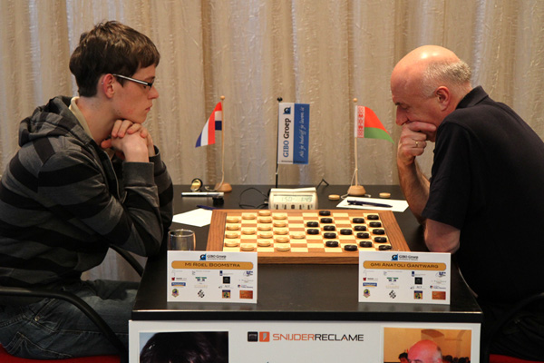

“Ik ben gewoon goed, anders was ik hier niet”
Door Miranda ten Wolde, Masterclass Sportjournalistiek, 13 mei 2011.
EMMELOORD – Het is een wereldkampioenschap, maar een groter contrast met de sfeer van een WK voetbal is amper voor te stellen. In Theater ’t Voorhuys in Emmeloord kun je een speld horen vallen. De weinige supporters lopen stilletjes rond op de blauwe vloerbedekking. Ze kijken naar tien tafeltjes waaraan de twintig beste spelers van de wereld een kopje koffie drinken of een banaan eten, terwijl ze geconcentreerd naar een bord met zwarte en witte stenen staren.
Aan een van die tafeltjes doet Roel Boomstra, een wat schuchtere jongen met een bril, zijn best de tegenstander te slim af te zijn. Tot nu toe is dat aardig gelukt: de achttienjarige Emmenaar staat op een gedeelde tweede plek in het damtoernooi. “Roel heeft zijn plaats veroverd in de wereldtop”, zegt Rob Clerc, bondscoach van de Koninklijke Nederlandse Dambond (KNDB). “Hij is een exceptioneel talent.”
“De KNDB heeft Roel Boomstra ontdekt en begeleid. Hij deed mee in het talentontwikkelingsprogramma. Als er een groot jeugdtoernooi in het buitenland was, stuurden we altijd hem daarheen”, vertelt Marcel Kosters, bestuurslid van de KNDB. Ook Boomstra zelf vindt het een voordeel dat hij jong begonnen is met de sport. “Ik was zeven toen ik voor het eerst ging dammen, dat helpt natuurlijk wel. Ik weet nog dat ik ook schaken geprobeerd heb, maar daar was alles zo strak geregeld. Toen ik bij de damclub kwam, zeiden ze meteen: ‘Ga maar zitten en speel maar een potje’.” Hij werd direct gegrepen door het spel. “Je kunt je goed voorbereiden op een partij, maar er zijn bij dammen zoveel combinaties mogelijk dat je toch altijd weer wordt verrast.”
Boomstra is de jongste speler op het kampioenschap. Op de vraag hoe hij dat voor elkaar heeft gekregen, antwoordt hij bloedserieus: “Omdat ik gewoon goed ben. Anders kom je hier niet. Ik ben slim, mijn hoogbegaafdheid zorgt ervoor dat ik scherp kan denken.” Toch moet hij er wel iets voor doen. “Ik train twee uur per dag. Dan oefen ik in het vooruitdenken. Of ik speel partijen na van andere spelers.”
Damtrainingen zijn niet puur gericht op het denkwerk. “Een lichamelijke conditie is minstens zo belangrijk”, aldus bondscoach Clerc. “Het WK duurt drie weken en alle spelers komen een keer tegenover elkaar te staan. Het is belangrijk dat je op het einde nog fit bent, zodat je helder kunt denken.” In die training neemt het omgaan met onverwachte omstandigheden een belangrijke plaats in. “Met de Nederlandse dammers gingen we bijvoorbeeld naar een subtropisch zwemparadijs. Ik zette daar een dambord neer en zei tegen twee van de jongens: ‘Ga maar spelen’. Dat trok natuurlijk veel bekijks, maar toch moesten ze op hoog niveau dammen. Dat soort oefeningen maakt hun weerbaar.”
Voor Boomstra voorziet Clerc weinig problemen. “Als Roel het zo goed blijft doen, neemt de druk toe en het is afwachten hoe hij dan reageert. Maar Roel is heel zelfbewust, ik acht hem zo sterk dat hij daar wel mee om kan gaan.” Toch heeft Boomstra wel moeilijke momenten gehad in het toernooi. “Ik speelde gisteren tegen Alexander Baljakin. Die is nu Nederlands kampioen en hij is ook mijn trainer. Hij is een van de mensen tegen wie ik het minst graag speel. Ik heb heel lang gedacht dat hij in alles beter was dan ik en dat zit nu nog steeds in mijn hoofd.” Evenwel wist hij de partij te beëindigen met remise.
Of Boomstra wereldkampioen gaat worden, dat betwijfelt Clerc. “Dit is zijn eerste seniorenkampioenschap, het is niet heel waarschijnlijk dat hij wint. Maar er is zeker een kans.” Zelf hoopt Boomstra natuurlijk op de titel. “Maar er zijn een paar sterke Russen bij. Ik denk eerlijk gezegd dat topfavoriet Alexander Georgiev gaat winnen.” Georgiev zelf is het met hem eens. “Roel is een goede speler, die het ver kan schoppen. Hij is een mogelijke concurrent. Maar eerlijk gezegd denk ik dat op dit moment niemand beter is dan ik.”
Roel Boomstra tegen Anatoli Gantwarg
